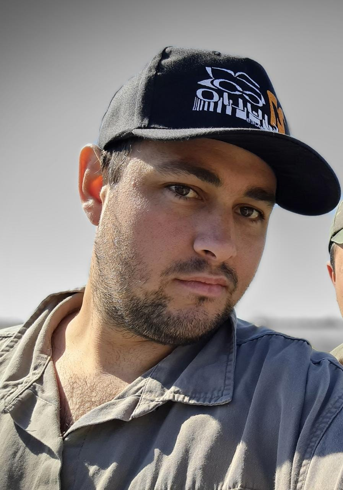

Perino Emiliano Jesús

Acerca de mi
Soy de Sarmiento, un pueblo en la porvincia de Santa Fe, Argentina. Naci el 6 de Octubre de 1995, actualmente tengo 25 años. No fumo y solo bebo en compañia.
Educación
- BACHILLER DE ECONOMÍA | EEM Nº 357 ALBERTO FRANCEZÓN
- INGENIERIA EN SISTEMAS DE INFORMACIÓN | UTN FRSF
INCOMPLETO: 2 años de cursado
Experiencias Laborales
- Ayudante de Albañil
- Alambrador
- Tractorista
Skills
- Ingles
- Matematicas
- Computacion
- Conduccion
- Herramientas
- Compañerismo
Hobbies
Me gusta jugar a los videojuegos online con mis amigos, reunirme con mi familia a cenar o hablar al pedo. Hago muy poco ejercicio durante la semana, pero algo es algo!
Henry Question!!
Estoy estudiando esta carrera porque se me da facil el manejo de computadoras ademas de que me gusta programar, tuve un poco de experiencia en la universidad respecto a la programacion en c++ aunque ya lo olvide, ademas lei la mitad del libro Eloquent Javascript.
Sinceramente creo que lo unico que me falta para ser un programador es un plan de estudio y algo que me obligue a dejar de vaguear, ahi es donde entran ustedes. Ademas me fascina la idea que me ayuden a encontrar laburo al finalizar.
Mis expectativas al finalizar el cursado no son muchas, pero son importantes. Lo que espero es encontrar un trabajo ya sea a distancia o presencial, para ir acumulando experiencia y avanzar tanto en la carrera laboral como en la vida.